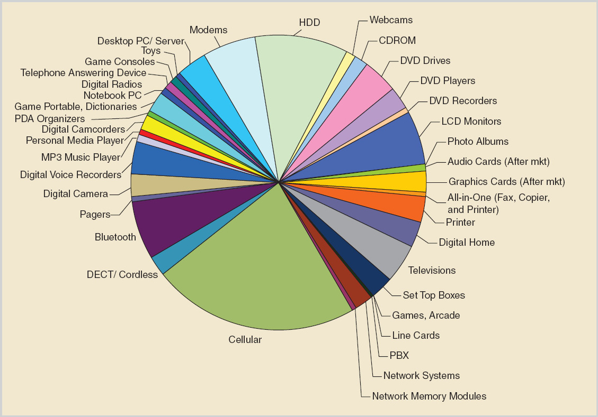

The development of memory technology has long been a main force driving the semiconductor industry at a fast pace following Moore’s law, and its growth is expected to continue with more innovative technology solutions. In terms of whether they can store data without power supply, the types of memory can be categorized mainly as 2 branches(see Fig.1): 

The original concept was presented in 1971 by Frohman-Bentchkowsky, who suggested a MOS transistor structure with a floating gate, that stores charge by avalanche injection[1,2]. Then the erasable programmable read only memory(EEPROM) utilized that concept, and was once a dominant technology for nonvolatile memory. Flash memory derives from EEPROM, a major difference being that EEPROM uses ultraviolet(UV) to erase, whereas flash makes it possible to electrically erase data.
Started from 1990s, flash has been increasingly growing both in the maturity of technology and its market share. The feature size scaled from um order of magnitude down to the current state-of-art of 20nm.
Before 2000, flash was more of a EPROM replacement, with only less than 2Mb volume of storage, and read/write cycle was limited to 10000 times.
Since 2000, flash became widely used in memory market and numerous researches are focused on structure and reliability issues that may hinder further scaling down of flash memory. The trend of reinventing or even substituting flash in order to improve the life time, reliability and performance of nonvolatile memory starts in recent years, with help of emerging technologies including 3D integrated circuit, for making a 3D flash structure, and alternative nonvolatile memory concepts, such as phase change memory.[5]
Most of flash technologies are based on the floating-gate structure initially introduced in 1971. A flash cell is essentially a MOS transistor with floating-gate. The floating-gate is a insulate polysilicon layer between the control gate and the transistor channel, as shown in Fig.3.
The material between the control gate and the floating gate is oxide-nitride-oxide(ONO), and an oxide called “tunnel oxide” forms a tunnel possible for electron to go through(under certain circumstances, i.e., Channel Hot Electron:CHE) is between the floating-gate and the transistor channel. The floating-gate is effectively isolated by both of these two layers, acting as a charge-trapping element able to store information ideally permanently without power supply. The tunnel oxide is critical since it is the path through which electrons are transported by electrical pulses during programing and erasing, so we will later discuss several reliability issues that emphasize on the tunnel oxide, and possible damages that could occur.
The cell has 2 states to represent one bit:
When the charge stored in the floating-gate is neutral, it is considered as a logic “1”. And when a negative amount of charge is stored, it represents logic “0”. As shown in Fig.4.

Based on this cell structure, two types of flash memories are developed in terms of the arrangement of the transistor array: NOR flash and NAND flash.
Cells in a NOR flash share a common source voltage. A row of the cells share a common gate voltage called word line, while one column of cells have their drain connected to bit line. The NOR flash acts as a NOR gate: The bit line would be low if the word line of one or more of its cells is brought up high. (See Fig.5.) An array of cells in a NAND flash meanwhile are connected in series, making it acts like a NAND gate: only when all word lines of those cells are brought high will the bit line containing the cells be low.
NOR flash has a faster operation time thanks to its somewhat parallel arrangement, suffering less bit density at the same time though. It’s more often used in applications that need short response time rather than low cost and area.
NAND flash made up the mass-storage market due to its high density and lower cost-per-bit. Although its performance is not so good as NOR flash, it demonstrates large improvement compared with magnetic disks.
Reading operation is accomplished by applying a reading voltage on the control gate, and measuring the threshold voltage of the MOS transistor. As depicted in Fig.6, the threshold voltages for logic “1” and “0” differ by an amount of voltage shift due to the charge state in the floating-gate. In the case of logic “0” condition, the negative charge stored counteract the voltage applied on the gate, demanding it to increase the voltage to generate a current between source and drain. Selecting a proper threshold voltage(Vt) makes it possible to determine the charge state in the floating-gate, thus the logic value. If there’s no current flow when applying Vt, it suggests a “0”, and an “1” otherwise.

Several physical phenomena can be made use of to transport electrons to (and from as well) the floating-gate. These physical effects only happen when the condition is met, i.e. high temperature, electrical field or else. After the charges are successfully injected, the data can be kept under normal condition for years.
Two mechanisms contribute to the programming and erasing of flash:
The electrons acquire high energy and travel through the transistor channel, forced by the electric field between source and drain. The energy is high enough such that a percentage of the electrons are able to penetrate the tunnel oxide barrier and stay in the floating-gate, as the energy reduces.
A quantum-mechanical effect is utilized by applying an intense electric field on the tunnel oxide, creating a current between the floating-gate and the transistor channel, electrically eliminating the charges in the floating-gate.
To the best of the current technology, the programming of NOR flash employs the CHE mechanism, while the erasing, as well as both programming and erasing of NAND flash, are all using the Fowler-Nordheim tunneling mechanism.
Traditional NAND technology employs Planar integration circuit, meaning all wires are arranged by 2-Dimension on board, and has been advancing over a decade coming to sub 20nm fabrication size(see Fig.7), while the capacity can achieve as much as 128 GB. But as a saturation question seems to emerge, whether we can step into 10nm technology remain challenging before several very critical factors are resolved.
The physical size of tunnel oxide and floating-gate have limitation themselves. The thickness of tunnel oxide determines the result of CHE or Fowler-Nordheim tunneling, and the ability to maintain the charges, and has to guarantee the flash memory a life of usage long enough. For the floating-gate, as the size is scaled down, the flash memory suffers from few electron effect, an inherent issue. The floating-gate can hold only around 15 electrons[6] so the high probability of electron loss makes it impossible to sustain a data retention time of 10 years[7]. 3D integration is introduced to not only scale the transistor in X and Y dimension but the vertical dimension as well.
Manufacturing technologies include:
Since bit lines and word lines are all shared among rows and columns of cells, neighboring cells have to tolerate high electrical stress applied on bit line or word line while programming target cells. This mechanism that may result in data corruption is called program disturb. There are two types of program disturb, row disturb and column disturb, regarding respectively that the affected cells share the same bit line or column line with the written cell.
A non-volatile memory should have capability of maintaining data for at least 10 years. It would be intolerable if the rate of charge loss, in this case, the reduction of charges in the floating-gate, is too high. Considering that the number of electrons in a sub 20nm flash cell mentioned previously is only around 15, it’s of critical importance to avoid potential failure cause.
Possible causes are:
A 24nm SSD is specified for 10000 order of magnitude program/erase cycles. When scaling down to 20nm, SSD has a less ability of 1000 order of magnitude program/erase cycles. Thus companies resort in separating part of the SSD as backup storage, and allow less volume to be available at one time, providing the backup storage only to substitute those working cells suffering errors.
The main cause of decline of cell performance is tunnel oxide degradation. High-field Fowler-Nordheim tunneling and hot-electron degradation inevitably cause the generation of defect on tunnel oxide and charge trapping.[4,7] The threshold voltage Vt for both programming state and erasing state eventually change and become close to each other, as the trapped charge accumulate over cycles. The performance would be gradually impacted as a slowing writing operation, if not with errors.
A Multi-level cell(MLC) structure of flash memory has become the dominant part of SSD product market. Instead of having only one level of threshold voltage that distinguish “1” and “0”, multi-level cell is developed to provide 2 to 4 threshold voltages, by accurately control the charge stored in floating-gate, and thus store more than 1 bit in one cell. To ensure a high accuracy of programming, error correction as a key issue must be improved as the technology evolves from conventional single-bit cell flash. In early generation of flash memory, only low-redundancy error detection and correction(EDAC) codes, e.g., Hamming code and error-detecting cyclic redundancy check(CRC) codes would satisfy performance demand. Today the further scaling down of cell size and utilization of MLC flash technology require more sophisticated ECC approaches, e.g., BCH codes and Low-Density Parity-Check(LDPC)codes.[9]
ECC consists of error detection, and error correction. It basically adds extra redundancy data to detect and correct errors. Data are organized as blocks, so ECC first checks if there is any error in a block of data, and error correction will be used at the very location of the error once the error is determined.
The error may occur during transferring from SSD to higher level memory, such as primary RAM memory or L1,L2 cache. The reading signal is issued by CPU, if requested data are not present in cache and main memory, the controller of main memory reads data from SSD, transferring a page of data from it. To make sure the data are correct, extra data are added at the end of the page, also referred as bad block management.
For single-cell flash, one method accepted by industry is Hamming-code. Among different ways of hamming-code encoding, one widely used is one that contains two error correction code values, an even parity bit and an old parity bit, [10] each representing half of the data. Then algorithm is used to determine and correct the data.
A NAND flash storage device, i.e. SSD, typically has multiple chips, each consisting of several sub-chips, which are further formed by multiple planes. One plane is organized by blocks, which is the basic unit for erase operations. Unlike NOR flash, a block is the smallest granularity for erasing in NAND flash. A block contains a fixed number of pages, which is the basic unit for read and program operations. [11]
Besides user data, a page also contains some metadata, for keeping information of the stored data, such as logic block addresses and ECC. This helps controller to determine the basic information. A page that is up to date is considered a valid page, whereas those whose data are not the latest are invalid pages.
As memory conducts its reclaiming process, the “garbage collection”, since the writing process must erase first, the fewer valid data one page has, the more likely it is chosen as a free space for new data to be written. Thus this eliminates unnecessary copying of the existing valid data. But some blocks that have valid immutable data will not be written for a long period while frequently updated blocks are being written over and over again.
Some cells are worn out at the same time some other cells remain intact. The unbalanced cycling hinders the optimal usage of flash memory, reducing the life time of the whole memory device, together caused by the wearing-out due to inherent failure of the memory structure.
Wear leveling is an algorithmic solution to deal with this issue. The basic idea is to evenly distribute the erasing and programming to all flash memory blocks, keeping the memory cells alive as long, and as unbalanced as possible.
Several levels can be used to implement the mechanism, from operating system to firmware controllers. Usually the strategy is implement at firmware level so as to closely meet the device specification while reduce the burden of upper level system, and increase compatibly. However wear-leveling inevitably consumes hardware resources and imposes more timing constrain and overhead on the memory performance.
Therefore numerous researches have been focused on the underlying algorithms, such as updating data out of place, and Hot-cold swapping.[11]
To address the reliability issues, emphasis should as well be on the lower level, studying and improving the physical mechanisms.